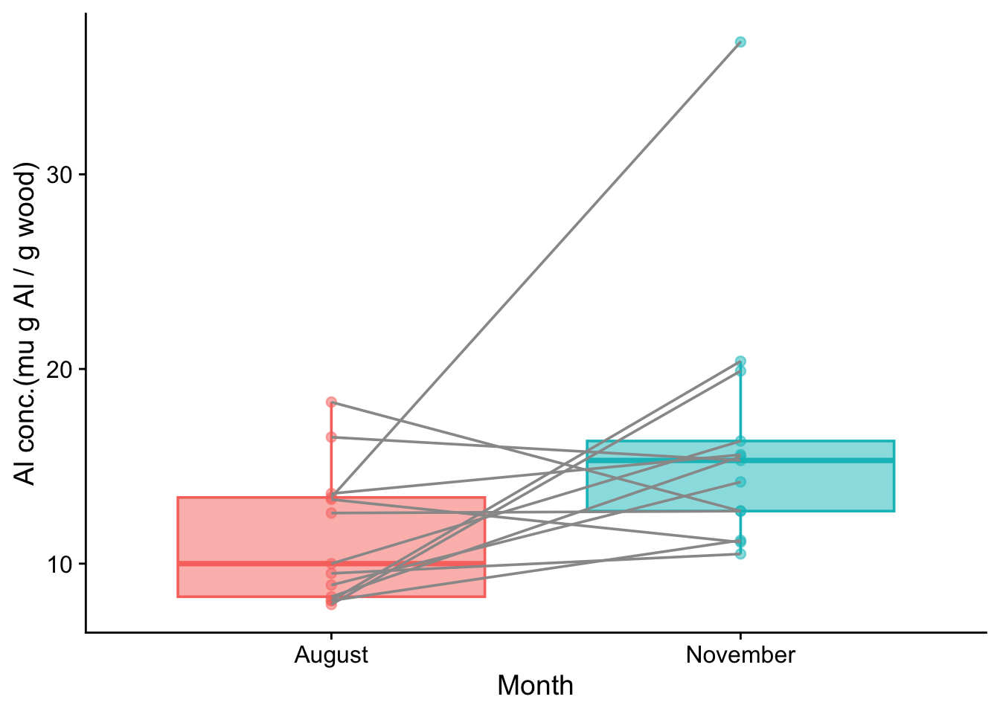

| ID | Clone | August | November |
|---|---|---|---|
| 1 | Balsam_Spire | 8.1 | 11.2 |
| 2 | Beaupre | 10.0 | 16.3 |
| 3 | Hazendans | 16.5 | 15.3 |
| 4 | Hoogvorst | 13.6 | 15.6 |
| 5 | Raspalje | 9.5 | 10.5 |
| 6 | Unal | 8.3 | 15.5 |
| 7 | Columbia_River | 18.3 | 12.7 |
| 8 | Fritzi_Pauley | 13.3 | 11.1 |
| 9 | Trichobel | 7.9 | 19.9 |
| 10 | Gaver | 8.1 | 20.4 |
| 11 | Gibecq | 8.9 | 14.2 |
| 12 | Primo | 12.6 | 12.7 |
| 13 | Wolterson | 13.4 | 36.8 |
4 Other tests for difference: paired and one sample
4.1 Paired data
Often one has a sample of replicated data where each element has a counterpart in another matched sample - paired data. A common scenario for this is when there are data for the same individual at two different points in time, for example before and after some event such as the application of a treatment.
In order to determine whether there is a difference between the two sets, one should take the paired aspect into account and not simply match the whole before-set against the whole after-set without doing this. That would be to throw away the information whereby there is likely to be a greater degree of correlation between the responses of an individual before and after the event than there is between any randomly chosen pairs of individuals before and after the event.
4.1.1 Which test: paired t-test or Wilcoxon signed rank test?
There is a choice between at least two tests: the parametric paired t-test and the non-parametric Wilcoxon signed rank test. Ideally one would use the t-test since it is more powerful than the Wilcoxon test. This means several things, but in particular it means that, all else being equal, it can detect a small difference with higher probability than the Wilcoxon test can.
4.1.2 The paired t-test
Where the data are numerical (ie not ordinal) and where the before and after data are both normally distributed around their respective mean values one would use the paired t-test in this scenario. One can test for normality using either a test such as the Shapiro-Wilk test, or graphically using either a histogram, a box plot, or (best), a quantile-quantile plot.
4.1.3 The Wilcoxon Signed Rank test
The t-test, an example of a so-called parametric test, is actually pretty robust against departures from normality, but where one doubts its validity due to extreme non-normality or for other reasons such as the ordinal nature of the data, the Wilcoxon signed rank test is a useful non-parametric alternative. It is called non-parametric because it does not make any assumption about the distribution of the data values. It only uses their ranks, where the smallest value gets rank 1, the next smallest gets rank 2, and so on.
So, you typically use this test when you would like to use the paired t-test, but you cannot because one or both of the data sets is way off being normally distributed or is ordinal.
4.1.3.1 Null Hypotheses
In both the t-test and the Wilcoxon signed rank tests, the null hypothesis is the usual ‘nothing going on’, ‘there is no difference’ scenario, but there is a subtle difference between them that reflects the different information that they use. In the Wilcoxon signed rank test the null is that the difference between the medians of pairs of observations is zero. This is different from the null hypothesis of the paired t–test, which is that the difference between the means of pairs is zero.
4.1.3.2 Test output
Both tests will give a p value. This is the probability that the mean (t-test) or median (Wilcoxon signed rank) paired differences between the corresponding before and after sample elements would be equal to or greater than it actually is for the data if the null hypothesis were true. If the p value is less than some pre-decided ‘significance level’, usually taken to be 0.05, then we reject the null hypothesis. If it is not, then we fail to reject the null hypothesis.
4.1.4 Example
We will use as an example a data set from Laureysens et al. (2004) that has measurements of metal content in the wood of 13 poplar clones growing in a polluted area, once from each clone in August and once again from each of them in November. The idea was to investigate the extent to which poplars could absorb metals from the soil and thus be useful in cleaning that up. Under a null hypothesis, there would be no change in the metal concentrations in the plant tissue of each clone between August and November. Under an alternate hypothesis, there would be.
Laureysens, I. et al. (2004) ‘Clonal variation in heavy metal accumulation and biomass production in a poplar coppice culture: I. Seasonal variation in leaf, wood and bark concentrations’, Environmental Pollution, 131(3), pp. 485–494. Available at: https://doi.org/10.1016/j.envpol.2004.02.009.
Concentrations of aluminum (in micrograms of Al per gram of wood) are shown below.
Plot the data
Before we do any test on some data to find evidence for a difference or a trend, it is a good idea to plot the data. This will reveal whatever patterns there are in the data and how likely they are to reveal a truth about the population from which they have been drawn.
Now we can plot the data as a box plot, with one box for August and one for November ie one for each level of the factor month. Had we not first tidied the data, we could not have done this.

Does it look as though the difference between the medians could plausibly be zero for the population from which these samples were drawn? Or, put another way, if it was zero, how big a fluke would this sample be? That is what the p value actually tells us.
4.1.5 Two sample paired t-test
Check for normality of differences
Before we use the t-test, we need to check that it is OK to do so. This means checking whether the paired differences are plausibly drawn from a normal distribution centred on zero.
The null hypothesis of the Shapiro-Wilk test is that the data set given to it is plausibly drawn from a normally distributed population. So let us give our sample of paired differences:
shapiro.test(poplars$August-poplars$November)
Shapiro-Wilk normality test
data: poplars$August - poplars$November
W = 0.92667, p-value = 0.3081The p value is very high. Thus we do not reject the null hypothesis and we can reasonably assume that the differences between the August and November aluminium concentrations in the sample could plausibly have been drawn from a normally distributed population, despite the outlier value in the November sample. Thus we can reasonably test for difference using a paired t-test.
The actual t-test
We can do this in R using the function t.test(), where we give to the function both the August and the November data, knowing that each August value has a counterpart November value, and we set the argument paired to TRUE.
t.test(poplars$August, poplars$November, paired = TRUE)
Paired t-test
data: poplars$August and poplars$November
t = -2.3089, df = 12, p-value = 0.03956
alternative hypothesis: true mean difference is not equal to 0
95 percent confidence interval:
-9.5239348 -0.2760652
sample estimates:
mean difference
-4.9 All parts of the output have meaning and are useful, but here we will focus on just two:
- the p value is equal to 0.040. Hence, if we have chosen the usual significance value of 0.05, we can take this to mean that there is evidence of a significant difference between the August and November values.
- the lower and upper bounds of the 95% confidence interval are (-9.52, -0.28). YOu can think of this interval as the range of values within which the difference can plausibly lie, at the 95% confidence level. The key thing is that this range does not encompass zero. This means that we can be confident at the 95% level that there is a non-zero change on going from August to November, and, in particular, that the August value is lower than the November value.
4.1.6 The non-parametric alternative: The Wilcoxon signed rank test
To be safe, because of that outlier, let us test for difference using the Wilcoxon signed rank test. In R this is done using the function wilcox.test(), with the argument paired set to TRUE.
wilcox.test(poplars$August, poplars$November, paired = TRUE)
Wilcoxon signed rank exact test
data: poplars$August and poplars$November
V = 16, p-value = 0.03979
alternative hypothesis: true location shift is not equal to 0We see that the conclusion (in this case) is the same.
4.1.7 Relation to one-sample paired test
The two-sample paired tests as we have done above are the same as doing a one-sample test to see if the differences between the August and November paired values is different from zero. This is true whether we do a t-test or a Wilcoxon signed rank test.
In either case, the first argument is the vector of differences, and the second mu is the threshold value against which we want to compare those differences, in this case zero.
t.test(poplars$August - poplars$November, mu = 0, data = poplars)
One Sample t-test
data: poplars$August - poplars$November
t = -2.3089, df = 12, p-value = 0.03956
alternative hypothesis: true mean is not equal to 0
95 percent confidence interval:
-9.5239348 -0.2760652
sample estimates:
mean of x
-4.9 wilcox.test(poplars$August - poplars$November, mu = 0, data = poplars)
Wilcoxon signed rank exact test
data: poplars$August - poplars$November
V = 16, p-value = 0.03979
alternative hypothesis: true location is not equal to 0Note that the output from both these one-sample tests, where the one sample is the vector of differences and the threshold with which it is compared is zero, is exactly the same as the output of the two-sample tests where the two samples were the vectors between which we were interested in detecting a difference, ie the August and November values. This is not surprising since the two cases are just two ways of doing exactly the same thing, which is to ask if there is evidence from the sample for a difference in the population between the August and November concentrations of aluminium.